Cancel OS · Previous review: premium identity
Design review: glass and depth, first slice
Selective glass on navigation, menus and overlays over a warm ambient ground; one family of rounded shapes;
restrained spring motion; the cut-tile logo's corner gesture while real work is pending. The slice covers the
website's subscription overview with its navigation and one menu, the Android subscription list and a
subscription with the transition between them, and the loader on both. Every screen uses synthetic test data
(account wizard@example.test, services named "Synthetic …") on a local stand-in server, in headless
Chrome or the Android emulator. No real person's data appears.
This is a public preview. Anyone with the link can open it. It asks search engines not to index it, but that is a request, not access control.
Android: a tint, not a blur
On Android the "glass" header is a translucent tint, not backdrop blur. React Native has no backdrop blur, and no package was added for it.
At rest the native header is transparent, tinted with the glass colour, over the screen's warm ground. When content scrolls under it, a solid sheet of paper fades in behind it over the first 12 dp of scroll, as Android's own top app bars do. A tint alone let the words underneath read through behind the title.
The menu is near-opaque (94%) for the same reason. Real blur would need a new native package
(expo-blur 57.0.3 using com.github.Dimezis:BlurView:version-3.1.0) and new builds. That
has not been approved or added. The website's glass is real CSS backdrop-filter blur in Chrome, and
becomes opaque where blur is unsupported or reduced transparency is set.
Recordings, real speed, with playback controls
Website, 13.6 s
Captions are drawn into the top of each frame, with the time since the start:
- 0.0 s: the dashboard. The subscriptions read is held 3 s at the local stand-in.
- 0.7 s: Subscriptions is clicked. The brand loader appears (hidden for its first 400 ms), then the list replaces it, and the current-page capsule glides.
- 5.0 s: Edit is pressed. The button settles on the spring and the editor opens in place.
- 6.9 s: the Appearance menu grows from its button, and the highlight follows the pointer.
- 8.3 s: Dark is chosen: smoked glass over the ember ground.
- 9.7 s: the capsule glides to Upcoming and back.
- 12.3 s: back to Match system (light here).

Android emulator, 30.8 s
The emulator's own screen recording, unedited. Captions are a separate track (WebVTT):
- 1.5 s: sign in, with the list read held 3 s at the local stand-in: the brand loader, then the list.
- 11.3 s: the list on its warm ground, under the header's glass tint (a tint, not a blur).
- 17.7 s: More options: the menu grows from its button; Back closes it.
- 22.8 s: a row is pressed (ripple and pressed ground), and the subscription slides in.
- 27.2 s: Edit details (a press on the spring) scrolls to the editor. With content under it, the header turns solid.
- 29.5 s: Back: the subscription slides away.

Website, headless Chrome

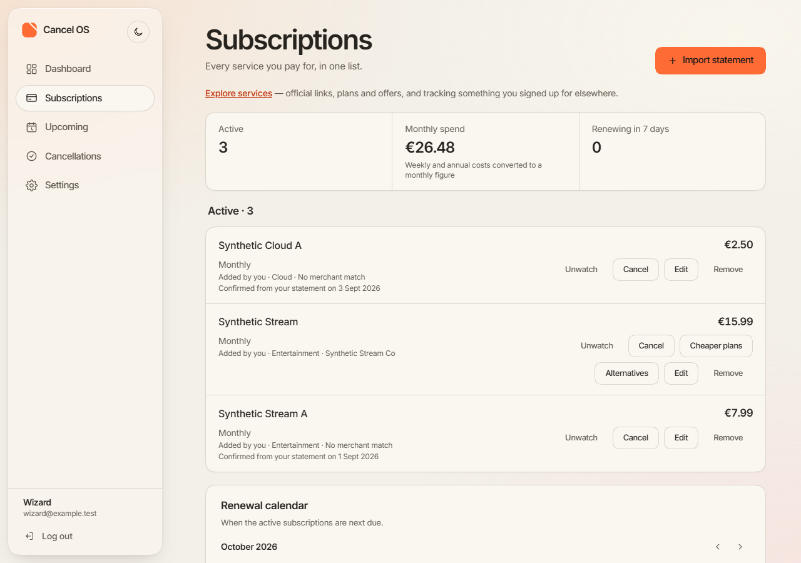
Overview, light, 1280 px
The sidebar is frosted glass: ivory at 70%, 22 px blur. Cards, amounts and forms stay on opaque paper.

Overview, dark, 1280 px
Smoked glass: charcoal at 62%, a fainter edge, designed separately rather than inverted.

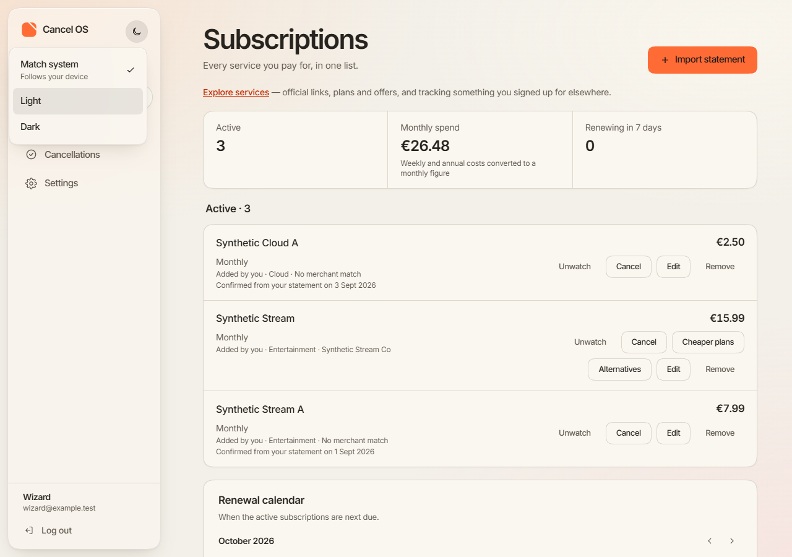
Appearance menu open, light
A new menu: Match system, Light and Dark. The old sun-and-moon button had no way back to following the device. It is the densest glass (90%, 34 px blur), and is drawn at the page level so its blur covers what is behind it.

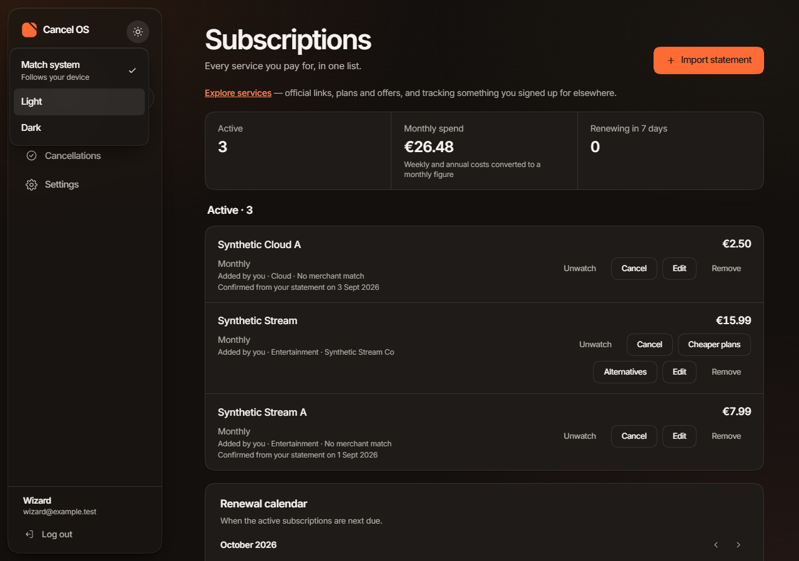
Appearance menu open, dark

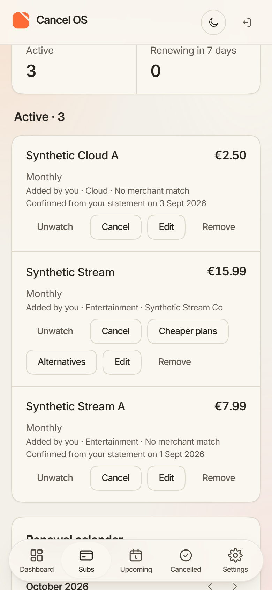
Phone width, scrolled, light
Content passes under the glass top bar and tab bar, softened by the blur. Before this slice, the top bar had no ground at all, and scrolled text showed through the logo and buttons.

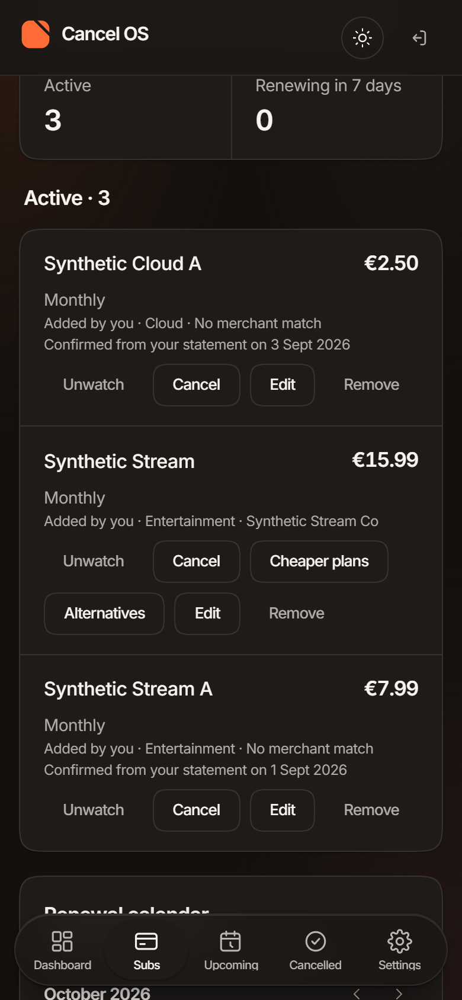
Phone width, scrolled, dark
Android emulator, 100% text size unless stated

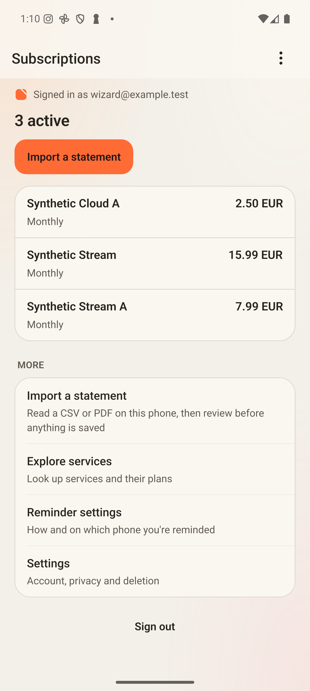
List, light
The header at rest: the glass tint over the warm ground. A count, never a money total.

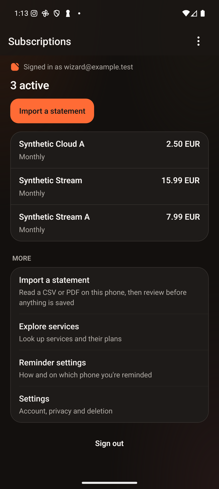
List, dark

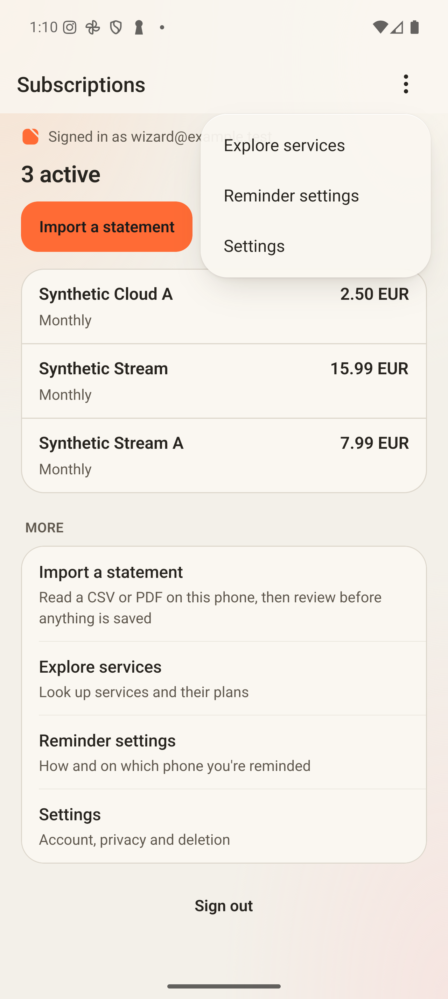
More options menu open, light
A new route to Explore services, Reminder settings and Settings. The list's "More" section is unchanged.

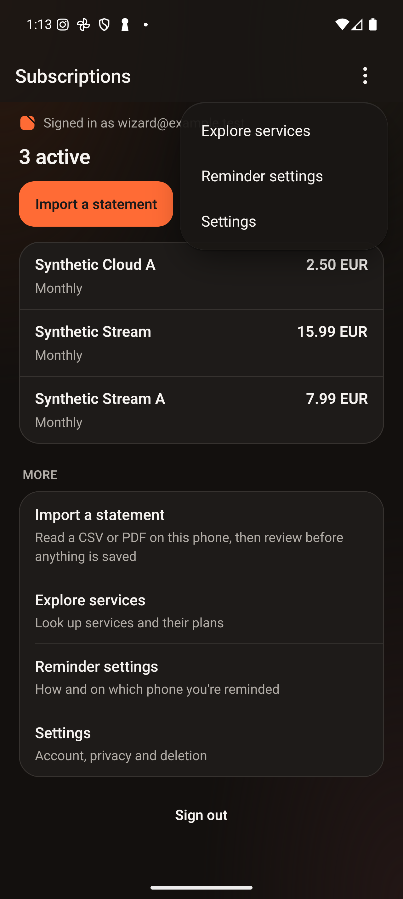
More options menu open, dark

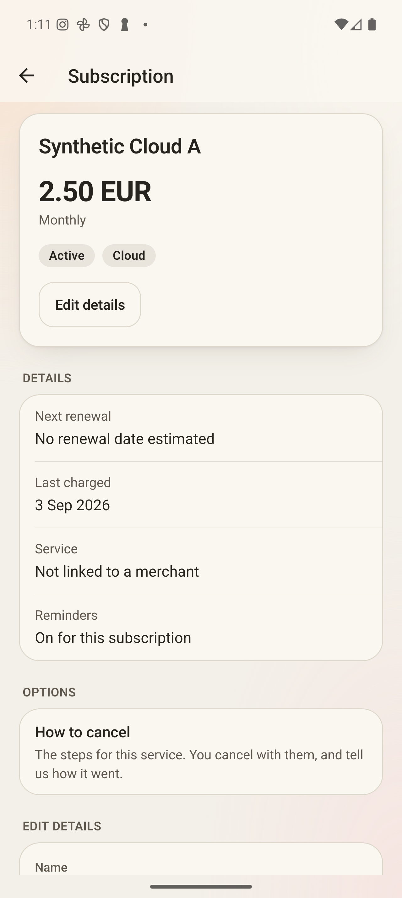
Subscription, light
The summary card has a layered shadow; the header shows Navigate up.

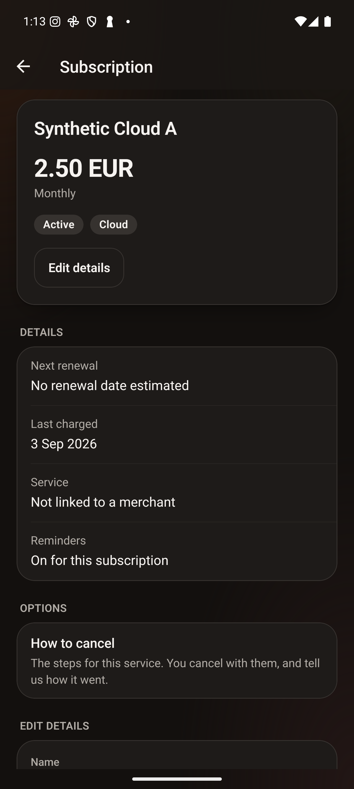
Subscription, dark

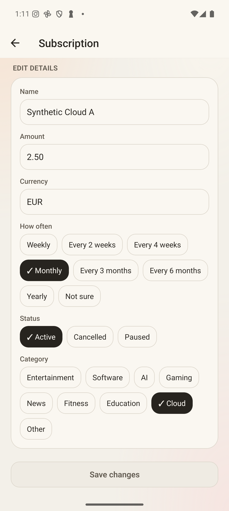
Scrolled under the header, light
After Edit details: content is under the header, so the solid paper has faded in behind it. No words show through (checked by pixel uniformity).

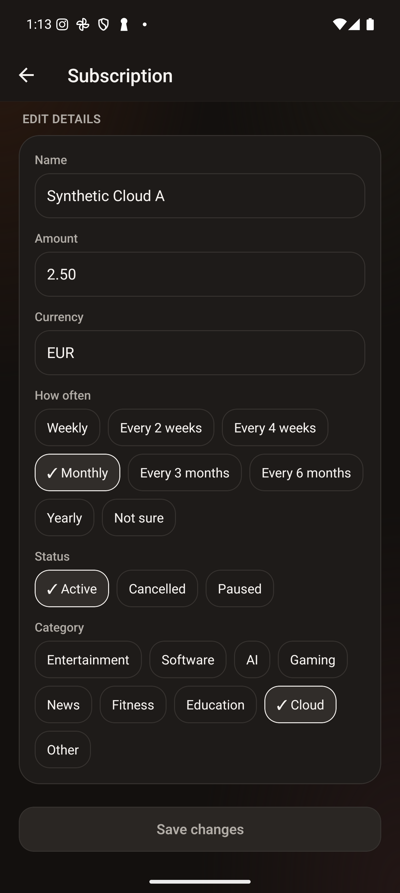
Scrolled under the header, dark

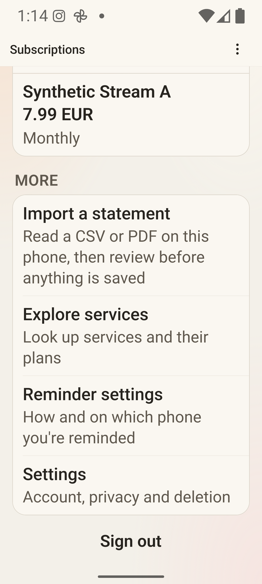
List scrolled, 200% text, light
At 100% the list fits the screen and does not scroll; at 200% it does, and the header turns solid the same way.
Different dataSynthetic Cloud A shows "No renewal date estimated" here. The previous review showed "Renews around 3 Nov 2026" for it, from an earlier test save; the stand-in resets when it restarts. Comparing those screens compares different data as well as a different design. Other values were not compared one by one.
Not verified
- PendingTalkBack, used by a person. The loader's moving logo is hidden from accessibility services, and its label stays the same. While it moves it sends a stream of "content changed" events, with no announcements and no focus events. What TalkBack says has not been observed. How TalkBack enters and leaves the new More options menu has not been checked either.
- Not runA screen reader on the website. Chrome's accessibility tree was read: the menu follows the WAI-ARIA menu-button pattern, and the loader is one status. No screen reader was run.
- Not runA physical phone and the release build. Everything Android here is a debug build in the emulator.
- Not measuredPerformance on real hardware.
- Android: scrolling was measured with Android's frame statistics in the emulator. Janky frames ranged 5.0–11.9% on the list and 4.7–10.1% on a subscription, against 3.3–13.8% and 8.7–12.2% at the checkpoint, so no difference can be told from run-to-run noise.
- Website: headless Chrome had no GPU, so its frame timings say nothing about what blur costs.
- The recordings look smooth; that is an impression, not a measurement.
- Not runBrowsers other than Chrome. Without
corner-shape(Safari, Firefox) corners are ordinary rounded ones. Withoutbackdrop-filterthe glass is opaque. - Observed, not investigatedOn the Android list at 100% text, one dump showed the solid scroll background as 144 px tall, while the header is 324 px. The list does not scroll at that size, so nothing showed. At 200% it covered the whole header, as in the screenshot above. A longer list at 100% has not been tried.
- PendingVisual approval of the material, shapes and motion. The palette and the logo are unchanged.
- Earlier recordingThe previous review's website WebP has the same timing fault: its frames were held for at least 20 ms, so its motion plays slower than real. Its source frames were not kept, so it cannot be re-timed. Read its motion speed as not representative.
Direct file addresses (HTTPS)
https://raw.githubusercontent.com/YahyaLendani/cancel-os-design-review/main/glass-depth-1/index.html(this page's source, as text)https://raw.githubusercontent.com/YahyaLendani/cancel-os-design-review/main/glass-depth-1/assets/web-glass-recording.mp4https://raw.githubusercontent.com/YahyaLendani/cancel-os-design-review/main/glass-depth-1/assets/web-glass-recording.webphttps://raw.githubusercontent.com/YahyaLendani/cancel-os-design-review/main/glass-depth-1/assets/android-glass-recording.mp4https://raw.githubusercontent.com/YahyaLendani/cancel-os-design-review/main/glass-depth-1/assets/android-glass-recording.vtthttps://raw.githubusercontent.com/YahyaLendani/cancel-os-design-review/main/glass-depth-1/assets/android-glass-recording.webphttps://raw.githubusercontent.com/YahyaLendani/cancel-os-design-review/main/glass-depth-1/assets/web-overview-1280-light.pnghttps://raw.githubusercontent.com/YahyaLendani/cancel-os-design-review/main/glass-depth-1/assets/web-overview-1280-dark.pnghttps://raw.githubusercontent.com/YahyaLendani/cancel-os-design-review/main/glass-depth-1/assets/web-menu-1280-light.pnghttps://raw.githubusercontent.com/YahyaLendani/cancel-os-design-review/main/glass-depth-1/assets/web-menu-1280-dark.pnghttps://raw.githubusercontent.com/YahyaLendani/cancel-os-design-review/main/glass-depth-1/assets/web-390-scrolled-light.pnghttps://raw.githubusercontent.com/YahyaLendani/cancel-os-design-review/main/glass-depth-1/assets/web-390-scrolled-dark.pnghttps://raw.githubusercontent.com/YahyaLendani/cancel-os-design-review/main/glass-depth-1/assets/android-list-light.pnghttps://raw.githubusercontent.com/YahyaLendani/cancel-os-design-review/main/glass-depth-1/assets/android-list-dark.pnghttps://raw.githubusercontent.com/YahyaLendani/cancel-os-design-review/main/glass-depth-1/assets/android-menu-light.pnghttps://raw.githubusercontent.com/YahyaLendani/cancel-os-design-review/main/glass-depth-1/assets/android-menu-dark.pnghttps://raw.githubusercontent.com/YahyaLendani/cancel-os-design-review/main/glass-depth-1/assets/android-detail-light.pnghttps://raw.githubusercontent.com/YahyaLendani/cancel-os-design-review/main/glass-depth-1/assets/android-detail-dark.pnghttps://raw.githubusercontent.com/YahyaLendani/cancel-os-design-review/main/glass-depth-1/assets/android-detail-scrolled-light.pnghttps://raw.githubusercontent.com/YahyaLendani/cancel-os-design-review/main/glass-depth-1/assets/android-detail-scrolled-dark.pnghttps://raw.githubusercontent.com/YahyaLendani/cancel-os-design-review/main/glass-depth-1/assets/android-list-scrolled-200-light.png